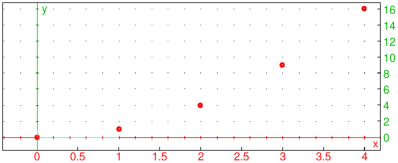
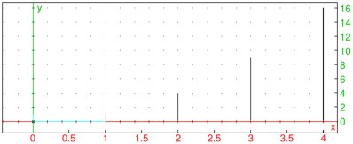
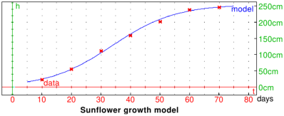

19.3.4 Random variables
The randvar
or random_variable
command produces an object representing a random variable.
The value(s) can be generated subsequently by calling
sample (see Section 19.3.2), rand (see
Section 19.3.2), randvector (see Section 19.3.5)
or randmatrix (see Section 19.3.6).
-
randvar takes a sequence of arguments:
distspec, which specifies a probability distribution with
parameters. The following distributions are supported:
-
Uniform distribution (see Section 19.4.2). Arguments:
- Binomial distribution (see Section 19.4.3). Arguments:
-
binomial.
- n, a positive integer.
- p, a probability (a number between 0 and 1).
- Negative binomial distribution (see Section 19.4.4). Arguments:
-
negbinomial.
- n, a positive integer.
- p, a probability (a number between 0 and 1).
- Multinomial distribution (see Section 19.3.3).
Arguments:
-
multinomial.
- [p0,p1,…,pj], a list of probabilities with
p0+⋯+pj=1.
- Optionally, [a0,a1,…,aj], a list of
possible return values.
- Normal distribution (see Section 19.4.7).
Arguments:
-
normal or normald.
- no arguments (for the standard normal distribution) or
two numbers µ and σ specifying the mean and the standard deviation.
- Poisson distribution (see Section 19.4.6).
Arguments:
-
poisson.
- λ, a positive real number.
- Student’s distribution (see Section 19.4.8).
Arguments:
-
student.
- n, an integer (the degrees of freedom).
- χ2 distribution (see Section 19.4.9).
Arguments:
-
chisquare.
- n, an integer (the degrees of freedom).
- Fisher-Snédécor distribution (see
Section 19.4.10).
Arguments:
-
fisher, fisherd, or snedecor.
- n1 and n2, integers (the degrees of freedom).
- Gamma distribution (see Section 19.4.11).
Arguments:
-
gammad.
- a and b, real numbers.
- Beta distribution (see Section 19.4.12).
Arguments:
-
betad.
- a and b, real numbers.
- Geometric distribution (see Section 19.4.13).
Arguments:
-
geometric.
- p, a number between 0 and 1.
- Cauchy distribution (see Section 19.4.14).
Arguments:
-
cauchy or cauchyd.
- a and b, real numbers.
- Exponential distribution (see Section 19.4.15).
Arguments:
-
exp or exponential or exponentiald.
- λ, a positive real number.
- Weibull distribution (see Section 19.4.16).
Arguments:
-
weibull or weibulld.
- k, an integer.
- λ, a real number.
- Discrete (categorical) distributions.
Arguments:
-
W=[w1,w2,…,wn], a list of nonnegative weights.
- Optionally, V=[v1,v2,…,vn], a list of values, or
[[v1,w1],[v2,w2],…,[vn,wn]], a list of object-weight pairs, or
f, a nonnegative function.
- a..b or range=a..b with real numbers
a and b, a range specification.
- Optionally, N, a positive integer or
V=[v0,v1,v2,…,vn], a list of values with n=b−a (here a
and b have to be integers).
The weights are automatically scaled by the inverse of their sum to
obtain the values of the probability mass function. If a function f
is given instead of a list of weights, then wk=f(a+k) for
k=0,1,…,b−a unless N is given, in which case wk=f(xk)
where xk=a+(k−1) b−a/N and k=1,2,…,N. The resulting
random variable X has values in {0,1,…,n−1} for 0-based
modes (e.g. Xcas) resp. in {1,2…,n} for 1-based modes
(e.g. Maple). If the list V of custom objects is given, then V[X]
is returned instead of X. If N is given, then vk=xk for
k=1,2,…,N.
- The parameters of uniform, normal, Poisson, geometric, exponential, binomial,
negative binomial, beta, gamma, and Weibull distribution can be computed from the
first and/or second moment which can be specified by the following arguments:
-
mean=µ, to specify a mean of µ.
- stddev=σ, to specify a standard deviation.
- variance=σ2, to specify a variance.
If there is no distribution of the given type that fits the given moments, an error is returned.
Note that binomial and negative binomial distributions, which depend on an integral parameter,
may not fit the moments exactly.
- randvar(distspec) returns an object
representing a random variable.
Examples
Define a random variable with a
Fisher-Snedecor distribution (two degrees of freedom).
| X:=random_variable(fisher,2,3) |
To generate one or more values of X, use the following commands.
or:
or:
|
| |
| ⎡
⎣ | 2.2652,0.1397,6.3320,1.0556,0.2995 | ⎤
⎦ |
| | | | | | | | | | |
|
Define a random variable with multinomial distribution.
| M:=randvar(multinomial,[1/2,1/3,1/6],[a,b,c]) |
|
| |
multinomial, | ⎡
⎢
⎢
⎣ | | , | | , | | ⎤
⎥
⎥
⎦ | , | ⎡
⎣ | a,b,c | ⎤
⎦ |
| | | | | | | | | | |
|
|
| |
| ⎡
⎣ | b,b,b,b,b,b,a,a,b,b | ⎤
⎦ |
| | | | | | | | | | |
|
Some continuous distributions can be defined by specifying their first
and/or second moment.
| randvector(10,randvar(poisson,mean=5)) |
|
| |
| ⎡
⎣ | 7,2,5,6,7,9,8,4,3,4 | ⎤
⎦ |
| | | | | | | | | | |
|
| randvector(5,randvar(weibull,mean=5.0,stddev=1.5)) |
|
| |
| ⎡
⎣ | 1.6124,3.2720,7.02627,5.5360,3.1929 | ⎤
⎦ |
| | | | | | | | | | |
|
| X:=randvar(binomial,mean=18,stddev=4) |
| X:=randvar(weibull,mean=12.5,variance=1) |
|
| |
weibulld | ⎛
⎝ | 3.08574940721,13.9803128143 | ⎞
⎠ |
| | | | | | | | | | |
|
| G:=randvar(geometric,stddev=2.5) |
|
| |
geometric | ⎛
⎝ | 0.327921561087 | ⎞
⎠ |
| | | | | | | | | | |
|
| evalf(stddev(randvector(1000,G))) |
| randvar(gammad,mean=12,variance=4) |
Uniformly distributed random variables can be defined by specifying
the support as an interval.
| randvector(5,randvar(uniform,range=15..81)) |
|
| |
| ⎡
⎣ | 77.0025,77.7644,63.2414,52.0707,66.3837 | ⎤
⎦ |
| | | | | | | | | | |
|
| rand(randvar(uniform,e..pi)) |
The following examples demonstrate various ways to define a discrete
random variable.
| X:=randvar([["apple",1/3],["orange",1/4],["pear",1/5],["plum",13/60]]):;
randvector(5,X) |
|
| |
| ⎡
⎣ | “orange”,“apple”,“apple”,“plum”,“apple” | ⎤
⎦ |
| | | | | | | | | | |
|
| W:=[1,4,5,3,1,1,1,2]:; X:=randvar(W):;
approx(W/sum(W)) |
|
| |
| ⎡
⎣ | 0.0556,0.2222,0.2778,0.1667,0.0556,0.0556,0.0556,0.1111 | ⎤
⎦ |
| | | | | | | | | | |
|
| frequencies(randvector(10000,X)) |
(See Section 19.1.12.)
|
| |
| ⎡
⎢
⎢
⎢
⎢
⎢
⎢
⎢
⎢
⎢
⎣ | | 0 | 0.0527 |
| 1 | 0.2189 |
| 2 | 0.2791 |
| 3 | 0.1698 |
| 4 | 0.0546 |
| 5 | 0.0557 |
| 6 | 0.059 |
| 7 | 0.1102 |
| ⎤
⎥
⎥
⎥
⎥
⎥
⎥
⎥
⎥
⎥
⎦ |
|
| | | | | | | | | | |
|
| X:=randvar(k->1-(k/10)^2,range=-10..10):;
histogram(randvector(10000,X)) |

| X:=randvar([3,1,2,5],[alpha,beta,gamma,delta]):;
randmatrix(5,4,X) |
|
| |
| ⎡
⎢
⎢
⎢
⎢
⎢
⎣ | | ⎤
⎥
⎥
⎥
⎥
⎥
⎦ |
|
| | | | | | | | | | |
|
Discrete random variables can be used to approximate custom continuous
random variables. For example, consider a probability density function
f as a mixture of two normal distributions on the support
S=[−10,10]. You can sample f in N=10000 points in S.
| F:=normald(3,2,x)+normald(-5,1,x):;
c:=integrate(F,x=-10..10):;
f:=unapply(1/c*F,x):;
X:=randvar(f,range=-10..10,10000):; |
Now generate 25000 values of X and plot a histogram:
| R:=sample(X,25000):;
hist:=histogram(R,-10,0.3):;
PDF:=plot(f(x),display=red+line_width_2):;
hist,PDF |

Sampling from discrete distributions is fast: for instance, generating 25 million
samples from the distribution of X which has about 10000 outcomes
takes only couple of seconds. In fact, the sampling complexity is
constant. Also, observe that the process does not slow down by spreading
it across multiple calls of randvector.
| for k from 1 to 1000 do randvector(25000,X); od:; |
Evaluation time: 2.12
Independent random variables can be combined in an expression,
yielding a new random variable. In the example below, you define a
log-normally distributed variable Y from a variable X with the standard
normal distribution.
| X:=randvar(normal):; mu,sigma:=1.0,0.5:;
Y:=exp(mu+sigma*X):;
L:=randvector(10000,Y):;
histogram(L,0,0.33) |

It is known that E[Y]=eµ+σ2/2. The mean of L
should be close to that number.
| mean(L); exp(mu+sigma^2/2) |
If a compound random variable is defined as an expression
containing several independent random variables X,Y,… of the
same type, you sometimes need to prevent its evaluation when
passing it to randvector and similar functions. Let e.g.
| X:=randvar(normal):; Y:=randvar(normal):; |
If you want to generate, for example, the random variable X/Y, you
would have to forbid automatic evaluation of the latter expression;
otherwise it would reduce to 1 since X and Y are both
normald(0,1).
| randvector(5,eval(X/Y,0)) |
|
| |
| ⎡
⎣ | −0.358479277895,5.03004946974,−5.5414073892,−0.885656967277,−2.63689662108 | ⎤
⎦ |
| | | | | | | | | | |
|
To save typing, you can define Z with eval(∗,0) and
pass eval(Z,1) to randvector or
randmatrix.
| Z:=eval(X/Y,0):; randvector(5,eval(Z,1)) |
|
| |
| ⎡
⎣ | 0.404123429613,−4.06194898981,0.00356038536404,1.61619003525,−2.85682173195 | ⎤
⎦ |
| | | | | | | | | | |
|
Parameters of a distribution can be entered as symbols to allow
(re)assigning them at any time. For example, input:
| purge(lambda):; X:=randvar(exp,lambda):; lambda:=1:; |
Now execute the following command line several times in a row. The
parameter λ is updated in each iteration.
| r:=rand(X); lambda:=sqrt(r) |
Output obtained by executing the above command line three times:
|
| | | 8.5682,2.9272 | | | | | | | | | |
| | 1.5702,1.2531 | | | | | | | | | |
| | 0.53244,0.72968
| | | | | | | | | |
|